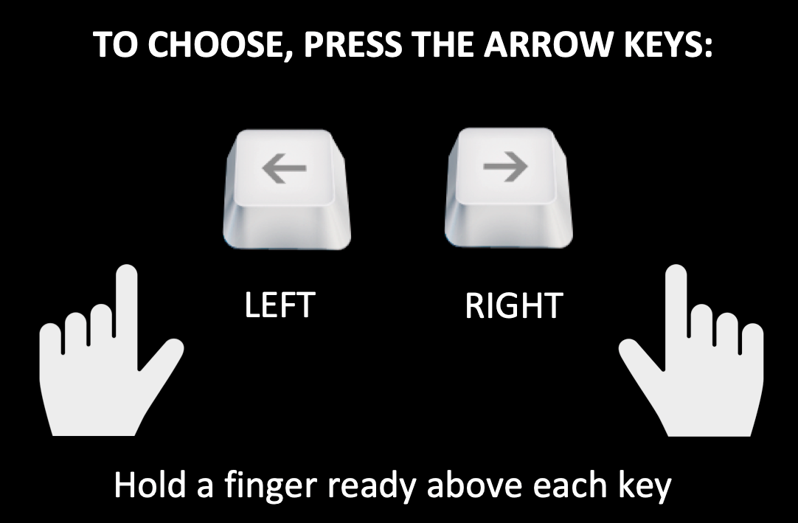

You have reached the final phase: now, you get to MAKE YOUR OWN CHOICES. On each round, choose the person who you think will SHARE with you, in order to win as many POINTS as possible. The more POINTS you win, the more DOLLARS you receive at the end of the game.
Here’s how you play: Every choice will be displayed for 2 seconds. You can make your choice as soon as the faces appear in each round. Press the left arrow key to choose the LEFT person, and the right arrow key to choose the RIGHT. You will not receive feedback, but the computer will record your choices and calculate your WINNINGS at the end.
If you are not sure, follow your gut instinct about who to choose. You must always respond within 2 seconds.

When you're ready to start, press BEGIN.